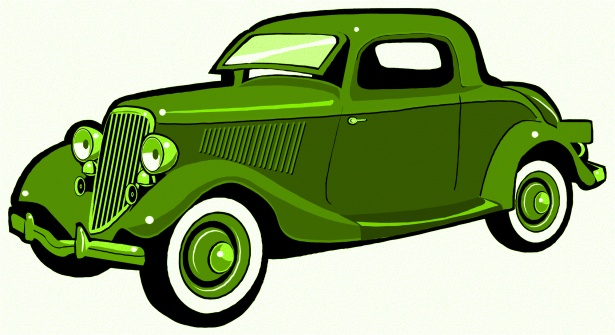

Normas de seguridad básicas (conocer la vía pública y sus elementos)
Señales de tráfico más habituales.
Consejos y recomendaciones de seguridad.
A continuación, tenemos las indicaciones de cómo vamos a trabajar, y una lista de las actividades que realizaremos. (Pulsar en cada una para ver el contenido)
¿Cómo lo haremos?
Nuestro objetivo será aprender las normas de Seguridad Vial más cercanas para nosotros en nuestro día a día.
Para ello, vamos a hacer un pequeño proyecto que consta de dos secciones con diferentes retos:
El primer reto, consiste en crear una pequeña historia que refleje una situación o problema relacionada con la Educación Vial. En la sección "Creamos historias" tienes toda la información necesaria.
En la segunda sección llamada ¡Atención, se graba!, encontrarás tres pequeños retos. El primero consiste en rellenar una hoja de registro durante una salida escolar demostrando que conoces muy bien todas las normas de seguridad que has aprendido relacionadas con la Educación Vial. En el segundo, tendrás que trabajar en grupo y explicar a tus compañeros tres normas o consejos de seguridad básicos que hayas aprendido. En el tercer reto, tendrás que grabar un pequeño vídeo para la televisión del colegio que formará parte del noticiero semanal "Molinos de Viento Express".
Además, para ayudarte a conseguir el reto y aprender más en las secciones "aprendiendo a circular" y "repasamos bailando" encontrarás diferentes actividades como por ejemplo: un juego de memoria para que aprendas las distintas señales de tráfico, vídeos explicativos o una canción con mucho ritmo.

Coche Verde(Licencia Pixabay)
¿Hemos realizado todas las actividades?
Aunque este recurso educativo es cortito, siempre es conveniente tener una lista de las actividades que hay en cada página, por si queremos asegurarnos de haber realizado todas.
Esta lista se denomina "Lista de cotejo" y la mostramos a continuación. Recordemos que, además, dos de los retos del proyecto, llevan asociada su rúbrica de evaluación.
Aprendiendo a circular
Lluvia de ideas: Observar y hablar sobre una imagen para elaborar una pequeña lluvia de ideas y conocimientos previos.
De camino al cole: Miramos una imagen y hablamos sobre ella. Contestamos una serie de preguntas.
Palabras perdidas. Vemos el vídeo de Seguridad Vial y completamos la actividad "palabras perdidas".
Elementos de la calle. Conocemos los elementos de la Calle y contestamos las preguntas de verdadero o falso.
Señales de tráfico. Aprendemos las señales de tráfico más habituales y entrenamos nuestra memoria con el juego del memory.
Repasamos bailando.
La rumba del semáforo. Cantamos y repasamos los contenidos aprendidos.
Creamos historias.
Sección 1. Reto número1. Creo una breve historia siguiendo unas pautas. (Incluye rúbrica de evaluación).
Ahora te toca a ti.
Sección 2. Reto número 1. Relleno una ficha de registro.
Sección 2. Reto número 2. Elaboro un mural informativo y lo expongo en clase. (Incluye rúbrica de evaluación).
Sección 2. Retonúmero 3. Elaboro un pequeño vídeo para la televisión del colegio.